INFO-F-422 - Statistical Foundations of Machine Learning#
Gian Marco Paldino - gian.marco.paldino@ulb.be#
Cédric Simar - cedric.simar@ulb.be#
TP 1 - Introduction to R#
February 2023#
Materials originally developed by Yann-Aël Le Borgne, Fabrizio Carcillo and Gianluca Bontempi#
Use Python as a calculator#
2 + 2
4
import math
math.exp(-2)
0.1353352832366127
import numpy as np
# generate random numbers from a standard normal distribution
np.random.randn(15)
array([-0.03455321, -0.61109788, -0.25057397, 0.75104036, -1.43416967,
0.37642976, -0.75347137, -0.78740913, -1.13762674, -0.25594572,
0.280337 , 0.22669238, 0.47861771, 1.31091837, -0.79063796])
Assign values to variables#
x = 2
x
2
y = x + x
y
4
Installing and loading libraries#
In Python, you install packages using pip or conda outside the script. For instance:
pip install numpy pandas matplotlib scipy
Then you can import them:
import pandas as pd
import matplotlib.pyplot as plt
from scipy import stats
Naming conventions#
Python naming conventions are guidelines for naming variables, functions, classes, and other identifiers to improve code readability and consistency. Python follows the PEP 8 style guide, which recommends using snake_case (lowercase letters separated by underscores) for variable and function names, while PascalCase (each word capitalized, no underscores) is preferred for class names. Constants are written in ALL_CAPS, with underscores separating words. Private or internal names often start with a single underscore (_), while double underscores (name) can signal special methods or prevent name collisions in subclasses. Adhering to these conventions ensures that code is easier to understand and maintain, especially in collaborative projects. Variables are case-sensitive and cannot start with a number. Avoid using built-ins like list, dict, etc.
Vectors and arrays in Python#
Defining arrays (vectors)#
w = np.array([1,2,3,4])
x = np.array([1.5, 2.5, 3.5, 3.5])
y = np.array(["Huey", "Dewey", "Loui"])
z = np.array([True, False, False, True])
wx = w > x
wx
array([False, False, False, True])
Creating sequences and repetitions#
# Sequence from 1 to 4
x = np.arange(1,5)
x
array([1, 2, 3, 4])
# Repeat the number 1 four times
y = np.repeat(1,4)
y
array([1, 1, 1, 1])
Exercises#
Generate the vectors:
1 3 51 2 2 2 3 3 3 3 3
seq_135 = np.arange(1,6,2)
seq_135
array([1, 3, 5])
seq_complex = np.concatenate([np.repeat(1,1), np.repeat(2,3), np.repeat(3,5)])
seq_complex
array([1, 2, 2, 2, 3, 3, 3, 3, 3])
Vector arithmetic#
weight = np.array([60, 72, 57, 90, 95, 72,60])
height = np.array([1.75, 1.80, 1.65, 1.90, 1.74, 1.91,1.69])
bmi = weight / height**2
bmi
array([19.59183673, 22.22222222, 20.93663912, 24.93074792, 31.37798917,
19.73630109, 21.0076678 ])
Exercises#
Compute the adjusted BMI using the formula \(bmi_2=\frac{weight}{height^{2.5}/1.3}\) and store it in a variable
bmi2
Solution#
bmi2 = weight/(height**2.5/1.3)
bmi2
array([19.25304744, 21.53250645, 21.18889688, 23.51266517, 30.92386986,
18.56489215, 21.0076678 ])
Functions for arrays#
v = np.arange(5,0,-1)
v.sum()
np.int64(15)
len(v)
5
np.sort(v)
array([1, 2, 3, 4, 5])
np.mean(v)
np.float64(3.0)
np.std(v, ddof=1) # sample std
np.float64(1.5811388300841898)
Indexing arrays#
height[4] # 5th element (0-based indexing)
np.float64(1.74)
height[[2,4,6]] # pick indices 2,4,6
array([1.65, 1.74, 1.69])
height[height > 1.70] # conditional indexing
array([1.75, 1.8 , 1.9 , 1.74, 1.91])
height[(height>1.70) & (height<1.90)]
array([1.75, 1.8 , 1.74])
Matrices#
In Python, we use NumPy to handle arrays (matrices and tensors). NumPy arrays can contain elements of any numeric type.
You can reshape a vector into a matrix using reshape() method in NumPy.
import numpy as np
x = np.arange(1, 13)
x = x.reshape(3, 4)
x
array([[ 1, 2, 3, 4],
[ 5, 6, 7, 8],
[ 9, 10, 11, 12]])
np.array([1, 2, 3, 4, 5, 6, 7, 8, 9, 10, 11, 12]).reshape(3, 4, order='F')
array([[ 1, 4, 7, 10],
[ 2, 5, 8, 11],
[ 3, 6, 9, 12]])
np.full((6, 7), 1)
array([[1, 1, 1, 1, 1, 1, 1],
[1, 1, 1, 1, 1, 1, 1],
[1, 1, 1, 1, 1, 1, 1],
[1, 1, 1, 1, 1, 1, 1],
[1, 1, 1, 1, 1, 1, 1],
[1, 1, 1, 1, 1, 1, 1]])
np.array([1, 2, 3, 4, 5, 6, 7, 8, 9, 10, 11, 12]).reshape(3, 4)
array([[ 1, 2, 3, 4],
[ 5, 6, 7, 8],
[ 9, 10, 11, 12]])
# Adding column names
import pandas as pd
x = np.array([1, 2, 3, 4, 5, 6, 7, 8, 9, 10, 11, 12]).reshape(3, 4)
df = pd.DataFrame(x, index=['A', 'B', 'C'])
df
| 0 | 1 | 2 | 3 | |
|---|---|---|---|---|
| A | 1 | 2 | 3 | 4 |
| B | 5 | 6 | 7 | 8 |
| C | 9 | 10 | 11 | 12 |
# Stack two arrays vertically
np.column_stack((np.arange(1, 5), np.arange(5, 9), np.arange(9, 13)))
array([[ 1, 5, 9],
[ 2, 6, 10],
[ 3, 7, 11],
[ 4, 8, 12]])
# Stacking arrays horizontally
np.row_stack((np.arange(1, 5), np.arange(5, 9), np.arange(9, 13)))
/var/folders/g7/l9_hhr256md6lt7yldvmnjjw0000gn/T/ipykernel_5969/3573511845.py:2: DeprecationWarning: `row_stack` alias is deprecated. Use `np.vstack` directly.
np.row_stack((np.arange(1, 5), np.arange(5, 9), np.arange(9, 13)))
array([[ 1, 2, 3, 4],
[ 5, 6, 7, 8],
[ 9, 10, 11, 12]])
Matrix functions#
a = np.array([[1, 2], [3, 4]])
a
array([[1, 2],
[3, 4]])
# matrix product
a.dot(a)
array([[ 7, 10],
[15, 22]])
# inverse matrix
np.linalg.inv(a)
array([[-2. , 1. ],
[ 1.5, -0.5]])
# transpose of a matrix
a.T
array([[1, 3],
[2, 4]])
Exercises#
Sort the vector height by decreasing order of weight
sorted_indices = np.argsort(weight)[::-1] # descending order indices
height[sorted_indices]
array([1.74, 1.9 , 1.91, 1.8 , 1.69, 1.75, 1.65])
Categories, Lists and data frames#
Factors / Categorical Data#
We can convert an array into a categorical data type using the from_codes method from the pandas library.
The from_codes method takes two main arguments:
codes: An array-like of integers where each integer points to a category.
categories: A list of category names corresponding to the integer codes.
In this case, the pain array [0, 3, 2, 2, 1] is mapped to the categories [“non”, “mild”, “medium”, “severe”]
pain = np.array([0,3,2,2,1])
categories = pd.Categorical.from_codes(pain, categories=["non","mild","medium","severe"])
categories
['non', 'severe', 'medium', 'medium', 'mild']
Categories (4, object): ['non', 'mild', 'medium', 'severe']
Lists#
In Python, lists are just Python lists. For structured data, we often use dictionaries or data frames.
intake_pre = np.array([5260, 5470, 5640, 6180, 6390,6515, 6805, 7515, 7515, 8230, 8770])
intake_post = np.array([3910, 4220, 3885, 5160, 5645,4680, 5265, 5975, 6790, 6900, 7335])
mylist = {"before": intake_pre, "after": intake_post}
mylist["before"]
array([5260, 5470, 5640, 6180, 6390, 6515, 6805, 7515, 7515, 8230, 8770])
Data frames#
In Python, data frames are handled by pandas.
d = pd.DataFrame({"intake_pre": intake_pre, "intake_post": intake_post})
d
d["intake_pre"]
0 5260
1 5470
2 5640
3 6180
4 6390
5 6515
6 6805
7 7515
8 7515
9 8230
10 8770
Name: intake_pre, dtype: int64
Loops & conditions#
Loops#
for i in range(5):
print(i)
0
1
2
3
4
While loop#
count = 0
while count < 5:
print(count)
count += 1
0
1
2
3
4
Conditions#
val = 10
if val > 0:
print("Positive")
elif val < 0:
print("Negative")
else:
print("Zero")
Positive
Apply-like operations#
In Python, you often use vectorized operations with NumPy, or apply-like methods in pandas.
For a DataFrame df:
# mean of each column
d.mean()
intake_pre 6753.636364
intake_post 5433.181818
dtype: float64
# apply function to each column
d.apply(np.mean)
intake_pre 6753.636364
intake_post 5433.181818
dtype: float64
# for each row
d.apply(np.mean, axis=1)
0 4585.0
1 4845.0
2 4762.5
3 5670.0
4 6017.5
5 5597.5
6 6035.0
7 6745.0
8 7152.5
9 7565.0
10 8052.5
dtype: float64
Exercise#
Compute the mean of the data frame thuesen to get the result as a list, and as a vector.
The thuesen dataset in R is part of the ISwR package and contains data on blood glucose levels and short velocity.
We create it for you here.
import pandas as pd
# Create a dictionary with the data
data = {
'blood_glucose': [4.03, 4.14, 4.21, 4.27, 4.35, 4.47, 4.57, 4.60, 4.61, 4.63, 4.65, 4.66, 4.67, 4.68, 4.70, 4.71, 4.72, 4.73, 4.74, 4.75, 4.76, 4.77, 4.78, 4.79, 4.80, 4.81, 4.82, 4.83, 4.84, 4.85],
'short_velocity': [2.91, 2.99, 3.02, 3.05, 3.08, 3.12, 3.15, 3.17, 3.18, 3.19, 3.20, 3.21, 3.22, 3.23, 3.24, 3.25, 3.26, 3.27, 3.28, 3.29, 3.30, 3.31, 3.32, 3.33, 3.34, 3.35, 3.36, 3.37, 3.38, 3.39]
}
# Create a DataFrame
thuesen_df = pd.DataFrame(data)
thuesen_df
| blood_glucose | short_velocity | |
|---|---|---|
| 0 | 4.03 | 2.91 |
| 1 | 4.14 | 2.99 |
| 2 | 4.21 | 3.02 |
| 3 | 4.27 | 3.05 |
| 4 | 4.35 | 3.08 |
| 5 | 4.47 | 3.12 |
| 6 | 4.57 | 3.15 |
| 7 | 4.60 | 3.17 |
| 8 | 4.61 | 3.18 |
| 9 | 4.63 | 3.19 |
| 10 | 4.65 | 3.20 |
| 11 | 4.66 | 3.21 |
| 12 | 4.67 | 3.22 |
| 13 | 4.68 | 3.23 |
| 14 | 4.70 | 3.24 |
| 15 | 4.71 | 3.25 |
| 16 | 4.72 | 3.26 |
| 17 | 4.73 | 3.27 |
| 18 | 4.74 | 3.28 |
| 19 | 4.75 | 3.29 |
| 20 | 4.76 | 3.30 |
| 21 | 4.77 | 3.31 |
| 22 | 4.78 | 3.32 |
| 23 | 4.79 | 3.33 |
| 24 | 4.80 | 3.34 |
| 25 | 4.81 | 3.35 |
| 26 | 4.82 | 3.36 |
| 27 | 4.83 | 3.37 |
| 28 | 4.84 | 3.38 |
| 29 | 4.85 | 3.39 |
mean_list = thuesen_df.mean().to_list()
mean_list
[4.631333333333333, 3.225333333333333]
mean_vector = thuesen_df.mean().values
mean_vector
array([4.63133333, 3.22533333])
Functions#
Defining functions#
def compute_sum(x):
cleaned = x[~pd.isnull(x)]
s = cleaned.sum()
mean_val = cleaned.mean()
return {"sum": s, "mean": mean_val}
compute_sum(np.array([1,2,-4,np.nan,6]))
{'sum': np.float64(5.0), 'mean': np.float64(1.25)}
In Python, a set of functions can be saved in a .py file and then importing them into your script.
You can import the functions using the import statement
Plotting#
import matplotlib.pyplot as plt
plt.scatter(height, weight)
plt.title("height vs weight")
plt.xlabel("height")
plt.ylabel("weight")
plt.show()
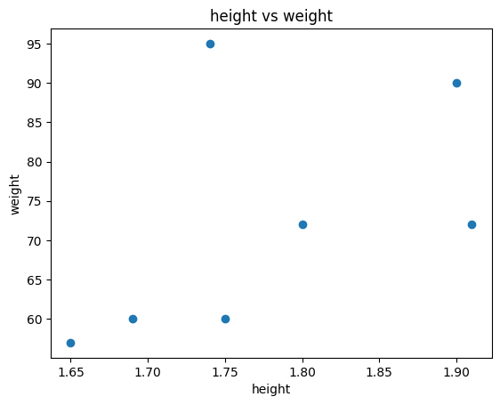
Add a line:
hh = np.array([1.65, 1.70, 1.75, 1.80, 1.85, 1.90])
plt.scatter(height, weight)
plt.plot(hh, 22.5 * hh**2, color='red')
plt.show()
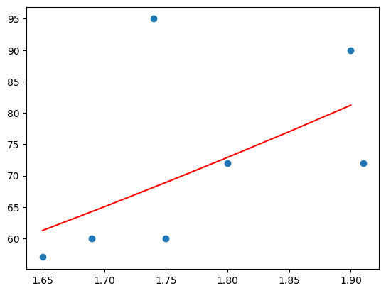
Save plot:
plt.figure()
plt.scatter(height, weight)
plt.plot(hh, 22.5 * hh**2, color='red')
plt.savefig("myplot.png")
plt.close()
Probabilities and distributions#
Sampling#
np.random.seed(123456)
# draw 5 integers between 1 and 40
np.random.choice(np.arange(1,41), 5, replace=False)
array([10, 31, 20, 36, 1])
# coin tosses
np.random.choice(["H","T"], 10, replace=True)
array(['T', 'T', 'H', 'T', 'H', 'H', 'T', 'H', 'H', 'H'], dtype='<U1')
# biased coin toss
np.random.choice(["H","T"], 10, replace=True, p=[0.8,0.2])
array(['H', 'T', 'H', 'H', 'H', 'H', 'H', 'H', 'H', 'H'], dtype='<U1')
Distributions with scipy.stats#
In Python, you can use the scipy.stats module to perform computations for probability distributions. Here is how you can compute the density, distribution function, quantiles, and pseudo-random numbers for a normal distribution, and plot the normal density
import numpy as np
import matplotlib.pyplot as plt
from scipy.stats import norm
# Parameters for the normal distribution
mean = 0
std_dev = 1
# Density (Probability Density Function)
x = np.linspace(-5, 5, 100)
density = norm.pdf(x, mean, std_dev)
# Distribution Function (Cumulative Distribution Function)
distribution = norm.cdf(x, mean, std_dev)
distribution
array([2.86651572e-07, 4.81652980e-07, 8.01369697e-07, 1.32024804e-06,
2.15381086e-06, 3.47932307e-06, 5.56574305e-06, 8.81655865e-06,
1.38302263e-05, 2.14842775e-05, 3.30507197e-05, 5.03521029e-05,
7.59694692e-05, 1.13515215e-04, 1.67985497e-04, 2.46207894e-04,
3.57400327e-04, 5.13856234e-04, 7.31768322e-04, 1.03219832e-03,
1.44219270e-03, 1.99603373e-03, 2.73660179e-03, 3.71680801e-03,
5.00103726e-03, 6.66652060e-03, 8.80453516e-03, 1.15213100e-02,
1.49385013e-02, 1.91930895e-02, 2.44365552e-02, 3.08331960e-02,
3.85574780e-02, 4.77903523e-02, 5.87145199e-02, 7.15086990e-02,
8.63410207e-02, 1.03361763e-01, 1.22695707e-01, 1.44434484e-01,
1.68629302e-01, 1.95284521e-01, 2.24352499e-01, 2.55730119e-01,
2.89257361e-01, 3.24718142e-01, 3.61843565e-01, 4.00317549e-01,
4.39784680e-01, 4.79859962e-01, 5.20140038e-01, 5.60215320e-01,
5.99682451e-01, 6.38156435e-01, 6.75281858e-01, 7.10742639e-01,
7.44269881e-01, 7.75647501e-01, 8.04715479e-01, 8.31370698e-01,
8.55565516e-01, 8.77304293e-01, 8.96638237e-01, 9.13658979e-01,
9.28491301e-01, 9.41285480e-01, 9.52209648e-01, 9.61442522e-01,
9.69166804e-01, 9.75563445e-01, 9.80806910e-01, 9.85061499e-01,
9.88478690e-01, 9.91195465e-01, 9.93333479e-01, 9.94998963e-01,
9.96283192e-01, 9.97263398e-01, 9.98003966e-01, 9.98557807e-01,
9.98967802e-01, 9.99268232e-01, 9.99486144e-01, 9.99642600e-01,
9.99753792e-01, 9.99832015e-01, 9.99886485e-01, 9.99924031e-01,
9.99949648e-01, 9.99966949e-01, 9.99978516e-01, 9.99986170e-01,
9.99991183e-01, 9.99994434e-01, 9.99996521e-01, 9.99997846e-01,
9.99998680e-01, 9.99999199e-01, 9.99999518e-01, 9.99999713e-01])
# Quantiles (Inverse of CDF)
quantiles = norm.ppf([0.025, 0.5, 0.975], mean, std_dev)
quantiles
array([-1.95996398, 0. , 1.95996398])
# Random Numbers
random_numbers = norm.rvs(mean, std_dev, size=1000)
random_numbers
array([-2.63952498e-01, 9.91460374e-01, -9.19069273e-01, 2.66045906e-01,
-7.09660784e-01, 1.66905233e+00, 1.03788188e+00, -1.70577534e+00,
-9.19853901e-01, -4.23785878e-02, 1.24764246e+00, -9.91963040e-03,
2.90212824e-01, 4.95767030e-01, 3.62948936e-01, 1.54810574e+00,
-1.13134544e+00, -8.93285405e-02, 3.37863192e-01, -9.45867039e-01,
-9.32131762e-01, 1.95602990e+00, 1.75870502e-02, -1.66919059e-02,
-5.75246591e-01, 2.54161289e-01, -1.14370424e+00, 2.15896929e-01,
1.19355484e+00, -7.71178112e-02, -4.08529596e-01, -8.62495498e-01,
1.34606114e+00, 1.51176266e+00, 1.62708118e+00, -9.90581868e-01,
-4.41652395e-01, 1.21152572e+00, 2.68519872e-01, 2.45804862e-02,
-1.57758494e+00, 3.96823233e-01, -1.05380712e-01, -5.32531966e-01,
1.45374870e+00, 1.20884262e+00, -8.09522027e-02, -2.64609512e-01,
-7.27965401e-01, -5.89345766e-01, 3.39968516e-01, -6.93205022e-01,
-3.39354797e-01, 5.93616390e-01, 8.84344587e-01, 1.59143129e+00,
1.41809375e-01, 2.20389600e-01, 4.35588673e-01, 1.92450565e-01,
-9.67010456e-02, 8.03351313e-01, 1.71507133e+00, -7.08758359e-01,
-1.20287166e+00, -1.81447008e+00, 1.01860133e+00, -5.95447490e-01,
1.39543272e+00, -3.92670010e-01, 7.20698768e-03, 1.92812294e+00,
-5.52243050e-02, 2.39598469e+00, 1.55282479e+00, 1.66598588e-01,
4.76091049e-02, -1.36472918e-01, -5.61756922e-01, -1.62303297e+00,
2.93992750e-02, -5.42108087e-01, 2.82696435e-01, -8.73015444e-02,
-1.57516958e+00, 1.77120844e+00, 8.16481884e-01, 1.10022999e+00,
-6.12665027e-01, 1.58697570e+00, 1.92341371e-02, 2.64294010e-01,
1.07480267e+00, 1.73519765e-01, 2.11026990e-01, 1.35713814e+00,
1.41875689e+00, -1.87902391e+00, 5.36825678e-01, 1.00615973e+00,
-2.97163628e-02, -1.14617839e+00, 1.00899561e-01, -1.03501823e+00,
3.14665215e-01, -7.73723253e-01, -1.17065303e+00, 6.48740342e-01,
-1.79666494e-01, 1.29183573e+00, -9.61428057e-03, 3.92149197e-01,
2.64598572e-01, -5.74090589e-02, -1.42563798e+00, 1.02409782e+00,
-1.06062285e-01, 1.82437527e+00, 5.95973745e-01, 1.16711469e+00,
6.01544496e-01, -1.23788100e+00, 1.06853751e-01, -1.27682900e+00,
-7.67101470e-01, 2.07587618e-01, 1.49959098e+00, 9.79542392e-01,
-1.63367839e+00, 6.15855303e-01, 6.29674798e-01, -1.42596595e+00,
1.85770444e+00, -1.19354549e+00, 6.77509823e-01, -1.53931136e-01,
5.20091212e-01, -1.47505102e+00, 7.22569652e-01, -3.22645710e-01,
-1.60163109e+00, 7.78033284e-01, -2.89342033e-01, 2.33140670e-01,
-2.23539940e-01, 5.42053767e-01, -6.88584550e-01, -3.52675611e-01,
-7.11410688e-01, -2.12259907e+00, 1.96293549e+00, 1.67202669e+00,
-8.80984112e-01, 9.97288555e-01, -1.69331573e+00, -1.79128593e-01,
-1.59806227e+00, 9.36914004e-01, 9.12559524e-01, -1.00340118e+00,
1.63278071e+00, -7.24625708e-01, 1.78219108e-01, 3.10610339e-01,
-1.08001691e-01, -9.74226034e-01, -1.14770799e+00, -2.28137418e+00,
7.60009861e-01, -7.42532126e-01, 1.53331791e+00, 2.49536186e+00,
-4.32771361e-01, -6.89542337e-02, 4.35195672e-02, 1.12245903e-01,
8.71721170e-01, -8.16063927e-01, -7.84880485e-01, 1.03065913e+00,
1.87482602e-01, -1.93394643e+00, 3.77311706e-01, 7.34121762e-01,
2.14161628e+00, -1.12254965e-02, 4.88685432e-02, -1.36068700e+00,
-4.79009866e-01, -8.59660916e-01, -2.31595127e-01, -5.27750466e-01,
-1.29633686e+00, 1.50680033e-01, 1.23836197e-01, 5.71764091e-01,
1.55556341e+00, -8.23761386e-01, 5.35420464e-01, -1.03285256e+00,
1.46972505e+00, 1.30412357e+00, 1.44973525e+00, 2.03109270e-01,
-1.03201136e+00, 9.69818083e-01, -9.62722956e-01, 1.38208319e+00,
-9.38793877e-01, 6.69141593e-01, -4.33566654e-01, -2.73610388e-01,
6.80432856e-01, -3.08449867e-01, -2.76098972e-01, -1.82116784e+00,
-1.99360591e+00, -1.92738462e+00, -2.02792423e+00, 1.62497208e+00,
5.51135059e-01, 3.05926659e+00, 4.55264124e-01, -3.07397496e-02,
9.35715945e-01, 1.06119172e+00, -2.10785228e+00, 1.99904673e-01,
3.23585669e-01, -6.41629709e-01, -5.87514305e-01, 5.38970373e-02,
1.94889142e-01, -3.81993972e-01, 3.18586819e-01, 2.08907484e+00,
-7.28293490e-01, -9.02545901e-02, -7.48198800e-01, 1.31893091e+00,
-2.02976636e+00, 7.92652241e-01, 4.61006704e-01, -5.42748973e-01,
-3.05383785e-01, -4.79195382e-01, 9.50309653e-02, -2.70099340e-01,
-7.07140214e-01, -7.73881851e-01, 2.29453005e-01, 3.04418180e-01,
7.36135124e-01, -8.59630855e-01, -4.24099591e-01, -7.76113659e-01,
1.27929264e+00, 9.43798238e-01, -1.00185948e+00, 3.06546135e-01,
3.07453022e-01, -9.06534418e-01, -1.50539660e+00, 1.39200871e+00,
-2.77926383e-02, -6.31022989e-01, -6.62356511e-01, 2.72504202e+00,
-1.84723961e+00, -5.29247106e-01, 6.14655839e-01, -1.59074223e+00,
-1.56478615e-01, -1.69637731e+00, 8.19712040e-01, -2.10772843e+00,
-4.88325614e-01, 8.51917590e-01, -1.24210131e+00, -6.54707791e-01,
-1.64736874e+00, 8.28257617e-01, -3.52361867e-01, -8.14323531e-01,
2.89685318e-01, -1.98237066e+00, 8.40165510e-01, -4.11403341e-01,
-2.04902756e+00, 2.84661223e+00, -1.20804932e+00, -4.50392259e-01,
2.42390536e+00, 1.21108025e-01, 2.66916473e-01, 8.43825926e-01,
-2.22539996e-01, 2.02198067e+00, -7.16789353e-01, -2.22448515e+00,
-1.06113703e+00, -2.32824704e-01, 4.30793334e-01, -6.65477850e-01,
1.82980746e+00, -1.40650934e+00, 1.07824805e+00, 3.22774063e-01,
2.00324279e-01, 8.90024088e-01, 1.94813173e-01, 3.51632622e-01,
4.48881496e-01, -1.97914530e-01, 9.65713976e-01, -1.52290939e+00,
-1.16618901e-01, 2.95574851e-01, -1.04770449e+00, 1.64055593e+00,
1.90583554e+00, 2.77211513e+00, 8.87874255e-02, -1.14419738e+00,
-6.33371877e-01, 9.25372000e-01, -6.43844709e-03, -8.20408166e-01,
-6.00873546e-01, -1.03926577e+00, 8.24758234e-01, -8.24095433e-01,
-3.37730291e-01, -9.27763835e-01, -8.40123411e-01, 2.48504777e-01,
-1.09250180e-01, 4.31977140e-01, -4.60709853e-01, 3.36504546e-01,
-3.20759529e+00, -1.53585401e+00, 4.09769006e-01, -6.73145487e-01,
-7.41112630e-01, -1.10891436e-01, -2.67290983e+00, 8.64491748e-01,
6.08681969e-02, 9.33091533e-01, 2.88840761e-01, 1.32496880e+00,
5.89219523e-01, 5.31414529e-01, -1.19874728e+00, -2.36866493e-01,
-1.31779822e+00, 3.73766484e-01, -6.75587545e-01, 9.81295223e-01,
-1.00322830e-01, 9.35523102e-01, 1.85490577e+00, 1.23330167e+00,
8.64325562e-01, -1.39016099e-01, 3.41852039e-01, -5.47515203e-01,
-1.80900644e-01, -3.55934185e-01, -1.31309047e+00, 7.84062029e-01,
-3.29751886e-01, -1.81960745e+00, 3.34582326e-01, 1.93646493e+00,
-1.12009977e+00, -3.78013833e-01, 9.71665362e-02, 5.34742493e-01,
8.91383542e-01, -4.38346123e-01, -1.26908266e+00, 6.49958001e-01,
-3.50875188e-01, 1.49859612e+00, 8.89435450e-02, 1.75964758e-01,
3.15016152e-01, 2.59318648e+00, -3.36016309e-01, 1.53366278e-01,
4.02341163e-01, 1.57685335e-01, -1.20189983e-01, -9.97169904e-01,
1.78299552e-01, -6.25006344e-01, -3.72354435e-01, -7.65653425e-01,
-1.46898783e+00, -6.20692183e-01, -7.21083823e-01, -6.22696048e-01,
6.48250080e-01, -1.94461624e+00, 9.23875518e-01, -9.03372905e-01,
1.98082818e-01, 1.04505630e+00, 1.11185714e+00, 1.33551086e+00,
3.32402351e-01, -7.35461905e-01, 3.96790926e-01, -7.38087582e-02,
-5.50099371e-01, -1.85363669e+00, -1.46715664e+00, 1.13936801e-01,
-1.42857247e+00, 3.37109493e-01, 5.24694802e-02, -2.29455977e+00,
2.14850744e+00, -2.93143992e-01, -1.59661457e+00, 1.49715974e-01,
1.73896733e-01, -4.94401600e-02, 1.39458970e+00, 6.98035196e-01,
6.31397309e-01, 8.16412062e-01, 7.09403878e-01, -1.19361588e+00,
-2.63519650e-01, -8.78602428e-01, 3.54579400e-02, -2.85807838e-01,
-9.57431193e-01, 2.24327932e+00, -1.12495653e+00, -1.99437412e+00,
5.02697328e-02, 5.12793594e-01, 6.56979424e-01, 1.29510638e+00,
4.45672885e-01, 5.41777238e-01, -5.63435975e-01, -3.85083164e-01,
-1.04278706e+00, -3.06152675e-02, -1.36960985e+00, -8.75127934e-01,
1.71176122e+00, 3.42339534e-01, 1.18788205e-01, -7.59453904e-02,
-1.11841946e+00, 7.37664513e-01, -2.23441401e-01, 1.82859061e+00,
1.09846575e+00, -2.84303293e-02, 9.02599507e-01, -7.71770632e-02,
3.88288729e-01, -1.35239385e-01, 7.89389167e-01, 8.27338335e-01,
1.47294374e+00, -2.75808507e-01, 4.33552254e-01, -1.41163032e+00,
1.27648660e+00, 1.08147923e+00, -1.69196529e+00, 8.83471511e-02,
1.56051584e+00, -4.62323187e-01, -3.16104854e-01, 9.17801009e-02,
-1.04505566e-02, 1.51497239e+00, 4.13590698e-01, -1.69442811e-01,
-5.52481469e-01, -1.57825321e+00, 3.44719455e-01, -2.00078733e-02,
-7.82154028e-01, -1.12205681e+00, 3.45855798e-02, -1.48459553e+00,
-5.48515755e-01, 1.33369297e-01, 8.16676296e-02, 1.66017487e+00,
1.19325260e+00, -1.08071594e+00, 3.66486294e-01, -7.20851910e-01,
1.23323498e+00, 4.11678826e-01, -7.07129954e-01, -3.92893741e-02,
-1.84668050e+00, -6.92625675e-01, 1.10885111e+00, -1.65169259e-01,
-1.86222551e+00, 4.52936694e-01, -4.72619697e-01, 1.01605823e+00,
1.26478486e+00, 4.16977667e-01, -7.66568155e-01, 8.49965675e-01,
2.60974525e-01, 1.39073000e-01, -1.24821676e+00, -1.05568332e+00,
1.11040773e+00, 2.62461184e-01, -4.12738369e-01, 5.53755853e-01,
4.56390836e-01, -2.07866527e+00, 1.11173730e+00, -9.42391933e-01,
8.29393956e-01, 7.34979639e-01, -4.56633802e-01, 4.52034989e-01,
3.04470846e-01, 1.65533186e+00, 8.73450007e-02, 8.46343472e-01,
2.86272549e-01, -3.45152342e-01, -5.61519194e-01, -6.87480857e-01,
-7.68105580e-01, -5.25790916e-01, -1.31140522e+00, -3.42328636e-01,
2.77170519e+00, -3.37922734e-01, -9.53885961e-01, -1.32851529e+00,
-1.73504774e+00, -5.75245954e-01, -1.92487653e+00, -8.81542698e-01,
-4.69586914e-01, -3.16244714e-01, -7.01027917e-01, 1.49942431e+00,
-1.03249099e+00, 2.21403151e+00, 2.55189225e+00, 3.62658803e-01,
-1.24049798e+00, 7.81066033e-01, -9.67818254e-01, -1.05872918e+00,
-1.35080089e+00, 2.35377459e+00, -1.91013557e+00, -1.61066555e-01,
-4.11546557e-01, -1.55664441e+00, -9.72173651e-01, -4.38983505e-01,
-6.99050179e-01, 3.77672973e-01, 3.75760786e-01, -1.51280899e+00,
-3.22912490e-01, -1.46770492e-01, 3.34941507e-01, 4.46366828e-01,
1.07910169e+00, -4.94153433e-01, 5.09901598e-01, -5.31686834e-01,
-1.61803121e+00, 6.96483581e-01, 6.52423158e-01, 2.72556066e-01,
2.59067168e-01, 4.04150756e-01, -1.09083100e+00, 1.81196365e+00,
-5.02002856e-01, 7.88445095e-01, 2.42473160e-01, 1.35029722e+00,
-3.77123277e-02, 4.59938815e-02, -7.69871431e-01, -1.31995466e+00,
-1.15642252e+00, -9.83939254e-01, -4.83541340e-01, 1.33188382e+00,
4.37816385e-01, -1.09350701e+00, 7.75157068e-01, 8.58181506e-01,
4.26174090e-01, -1.22334075e+00, -1.00594458e+00, -5.39598522e-01,
1.70360734e+00, 1.41319834e+00, 5.60642375e-01, 6.46481212e-03,
9.79592180e-01, -1.10011474e+00, 1.14477676e+00, -1.03917354e-01,
2.97163389e-01, -9.71706716e-01, -3.18325878e-01, -1.37323010e+00,
1.52739622e-01, -1.00895786e+00, -1.28718008e+00, -7.44505353e-01,
2.89655603e-01, 5.45614240e-01, 2.24631732e-01, 1.20504895e+00,
-2.64351454e+00, 4.68406317e-01, 8.26588848e-01, -1.10995583e+00,
3.52185966e-01, 3.87020839e-01, 9.09002654e-01, -6.55998512e-02,
-5.99020040e-01, -1.09600917e+00, -5.49859096e-01, -2.08017642e+00,
1.77194922e+00, 1.24415780e+00, 8.16217182e-01, 1.03229769e-01,
8.30192499e-01, 1.52934344e+00, -5.67735750e-01, -1.32048626e-01,
-4.66832938e-01, 3.66580071e-01, 1.35698977e+00, -1.56815060e+00,
-1.49318530e+00, 4.06920624e-01, -8.18435989e-01, -8.41025479e-01,
-4.42714671e-01, 1.63920668e+00, 6.97038264e-01, 1.78392756e+00,
-7.44102317e-02, 1.45764138e+00, 9.46050871e-02, -6.49320859e-01,
6.64272636e-01, -1.91968948e+00, -2.72096585e-03, -4.85998373e-01,
-4.57481901e-01, -5.24418849e-01, 2.05499280e+00, -7.14195436e-01,
1.88881360e-01, 3.70720706e-01, -1.99521318e-01, -1.26777687e+00,
3.27543743e-01, 2.06212609e-01, -1.56658611e+00, -6.89749434e-01,
-4.14939503e-01, 2.45947822e-01, -2.97504585e-01, -1.33759035e+00,
-3.99992440e-01, -2.01834353e+00, -1.13473154e+00, -1.06468757e+00,
-1.51967922e+00, 1.48653277e+00, -9.74553443e-01, 3.48965263e-01,
1.12603500e+00, -1.36512049e+00, 7.70704736e-01, 4.31501934e-01,
-3.03278945e-01, 1.31646339e+00, -4.96230388e-01, -9.96872366e-01,
6.64371850e-02, 5.33391750e-01, -1.30503705e-01, -4.65500078e-02,
8.76487474e-01, -3.32772749e-01, -5.60942187e-01, 7.22857496e-01,
1.30541562e+00, -9.93896759e-01, -6.93619017e-01, 9.69149264e-01,
1.02844248e+00, 1.15163911e+00, -9.39544837e-01, -1.08394385e+00,
-1.84731616e+00, 2.84060806e-01, 7.16448137e-01, 2.59934082e+00,
2.40944874e-01, 8.47946719e-01, -5.55755279e-01, 7.29206061e-01,
1.01114843e+00, 9.75899896e-01, 2.23732885e+00, 5.61197869e-01,
2.18690187e+00, 3.19887901e-01, -2.24767021e+00, 3.41418317e-01,
9.24728574e-01, 7.02546724e-01, 7.48553296e-01, -5.80265411e-01,
-9.28331038e-01, -2.03900337e+00, 6.11146703e-01, 2.52729764e+00,
1.55966298e-01, 1.09833171e+00, 9.81834646e-01, 1.11661328e+00,
-1.01986542e+00, -9.97687899e-01, 1.32491123e+00, -3.61211024e-01,
-2.89843436e-03, 1.83377113e+00, -1.31284806e-01, -1.94263149e+00,
6.75346286e-01, 7.21364104e-01, 1.09469523e+00, 5.23627843e-01,
1.13372809e+00, -3.85751080e-01, -1.82971002e+00, -4.77983865e-01,
3.54507984e-01, -2.27760634e-01, 7.58244731e-01, 6.38482405e-01,
1.22421816e+00, 1.77570272e-01, -6.85221232e-01, 1.45730226e+00,
-8.16334523e-01, 1.63050541e+00, -3.71681125e-01, -2.13743130e-01,
3.13226265e-01, -8.62009188e-01, 4.02659627e-01, 3.24782594e+00,
7.14273336e-01, 3.66135456e-01, 7.30842225e-01, -1.05774360e+00,
4.68558875e-01, 5.88256649e-01, -4.13735058e-01, 3.52798271e-01,
4.36192101e-01, -9.41946159e-01, -1.38597152e+00, -1.13375319e-01,
-3.17109224e-01, -1.86230122e+00, 8.50930397e-01, 5.23944875e-02,
-2.12681173e-02, -2.78948301e+00, 7.88241410e-02, 5.25347519e-01,
-2.68273300e-01, -1.16296531e+00, -1.02452232e+00, 1.45781717e+00,
1.95719862e+00, -2.28567270e-01, 2.57854302e-01, 4.35206525e-01,
-7.91299333e-01, -3.55908033e-01, 8.75255084e-01, 1.49622924e+00,
6.75613929e-01, 1.46734732e+00, -1.02626729e+00, 1.93417154e-01,
1.31992780e+00, 1.74374509e+00, -4.34931055e-01, -3.38132724e-01,
-1.27735138e-01, 4.71932167e-01, 3.01445501e+00, -3.47194507e-01,
2.19655457e-01, -1.61105484e+00, 9.01753793e-01, 6.38887351e-01,
5.30256466e-01, -2.85447241e-01, -3.11960355e+00, 1.33391305e+00,
7.75125120e-01, -1.31563408e+00, -5.13301480e-01, -9.86053283e-01,
1.43782059e-02, -4.99070790e-01, 2.61548834e-01, -1.18151886e+00,
-5.52678416e-01, -5.39139848e-01, 8.21189230e-01, -2.74846037e+00,
-2.31503829e+00, 7.63650614e-01, -7.97169765e-01, -1.68623767e+00,
-3.58874441e-01, 6.28561091e-01, -2.43336373e-01, 1.45659089e+00,
7.98312020e-01, 4.40265891e-03, 7.78275067e-01, 1.09163950e+00,
1.16484033e+00, -5.91529688e-02, -7.67480839e-01, 4.01154874e-01,
4.21116338e-01, -1.08394884e+00, -5.77647990e-01, -8.25295425e-01,
-5.90129619e-01, -2.55716682e-02, -2.50404885e-01, 1.76867372e+00,
9.72962823e-01, -1.63015033e+00, 2.20714494e-01, -1.15929668e+00,
2.36431028e-01, -9.38573031e-01, 3.09151866e-01, -6.72180203e-01,
-6.61670005e-01, -3.58968266e-01, 3.68159983e-01, -4.33720324e-01,
7.59376657e-01, -2.41634369e-02, 5.94941318e-01, -8.11823225e-01,
-8.58072293e-01, 8.30284935e-01, -9.15558634e-01, -1.44534800e+00,
-9.22527605e-03, 1.77998669e+00, -1.61500688e-01, 1.29979332e+00,
-4.91174110e-01, -2.00471597e+00, -2.08762658e+00, -5.55641259e-01,
-7.17208733e-01, -1.11545865e+00, 2.55322189e+00, 1.41224774e+00,
5.25490467e-01, -1.50223450e+00, 2.04773728e+00, -2.81028858e-01,
-5.96995932e-01, -2.56557886e-01, -1.76305421e+00, 1.20532405e+00,
-7.60917888e-01, 3.96285846e-01, -6.53496647e-01, 6.85542295e-01,
7.04907649e-01, -1.50620150e+00, 2.23188263e+00, 1.74950201e-01,
-2.31666131e-02, -4.95290748e-01, -8.60735747e-01, -1.13414633e+00,
4.26852216e-01, -2.90098115e-01, 2.38636075e-01, 1.07093241e+00,
-3.92588372e-01, 5.52887172e-01, 1.48083987e-01, -3.00218226e-01,
1.97377690e-01, 1.72078041e+00, -1.00345505e+00, 8.35153905e-02,
9.46550347e-01, -5.24392071e-01, -8.37803894e-01, -1.23690257e+00,
7.08801648e-01, -1.11510392e-01, -5.07219209e-01, 2.52422182e+00,
-9.90737577e-01, 5.48795825e-01, -2.17832148e+00, 9.04400107e-01,
7.46373542e-01, -1.24698741e+00, -9.61529264e-01, -5.14933894e-01,
2.45479328e-01, -3.74719256e-01, 6.58523929e-01, 2.50535105e-01,
-1.98923357e-01, 1.20027674e+00, -8.45726139e-01, -3.83520470e-02,
-2.58743537e-01, 1.48398404e-01, 5.08018144e-01, 1.65260900e+00,
-1.57872896e+00, -1.11077145e+00, 1.35329384e+00, -1.01213707e+00,
-3.17991964e-01, 3.97485587e-02, -5.66950672e-01, -1.28659661e+00,
-2.21605205e+00, -5.03993001e-01, -1.05605900e+00, -1.10790385e+00,
-9.40962270e-01, 5.59904913e-01, -6.39642372e-01, -1.89718791e+00,
7.66932965e-03, 1.57384241e+00, 2.75817036e-02, -6.72624833e-02,
2.52403847e+00, 1.23732193e+00, 9.21490568e-01, -7.33142131e-01,
2.86946551e-01, -2.35641585e-01, 1.88052746e+00, -6.84376145e-01,
-1.51962169e+00, 1.64246660e+00, -7.88941216e-01, -4.13876694e-01,
1.41911389e+00, -5.62999565e-01, 9.02913763e-01, 2.56857145e-01])
plt.plot(x, density, label='Normal Density')
plt.title('Normal Density Function')
plt.xlabel('x')
plt.ylabel('Density')
plt.legend()
plt.show()
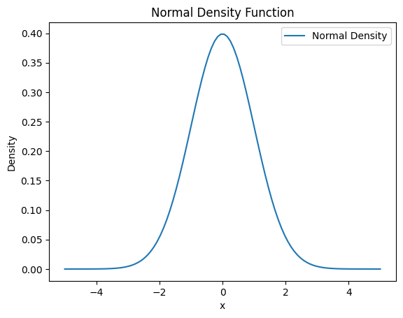
Exercises#
Plot the density for a binomial random variable \(B(50, 0.33)\)
from scipy.stats import binom
x = np.arange(51)
pmf_vals = binom.pmf(x, n=50, p=0.33)
plt.bar(x, pmf_vals)
plt.title("Binomial B(50,0.33)")
plt.show()
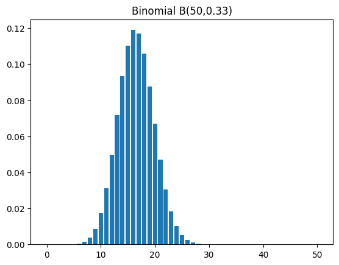
Compute the probability of a normally distributed variable with mean 132 and standard deviation 13 being smaller than 160
norm.cdf(160, loc=132, scale=13)
np.float64(0.9843738805715306)
Quantiles#
Definition: the quantile is the inverse of the distribution function. The p-quantile is by definition that value having the property that there is a probability \(p\) to obtain a value lower or equal to it. For example, the median is the 50% quantile.
The quantiles are used for computing the confidence intervals. Let \(n\) observations be drawn from a normal distribution with the same mean \(\mu\) and the same standard-deviation \(\sigma\). It is well known that the observed mean \(\overline{x}\) follows a normal distribution with mean \(\mu\) and standard deviation \(\sigma/\sqrt{n}\). A confidance interval of 95% for \(\mu\) can be obtained by
\begin{equation} \overline{x} + \sigma/\sqrt{n} \times N_{0.025} \leq \mu \leq \overline{x} + \sigma/\sqrt{n} \times N_{0.975} \end{equation}
where \(N_{0.025}\) is the 2.5% quantile of the normal distribution.
# 2.5% and 97.5% quantiles
q025 = norm.ppf(0.025)
q975 = norm.ppf(0.975)
q025, q975
(np.float64(-1.9599639845400545), np.float64(1.959963984540054))
Confidence interval:
xbar = 83
sigma = 12
n = 5
sem = sigma / np.sqrt(n)
lower = xbar + sem * q025
upper = xbar + sem * q975
(lower, upper)
(np.float64(72.48172951308102), np.float64(93.51827048691898))
Generation of pseudo-random numbers#
np.random.randn(10) # standard normal
array([ 0.63255251, 1.79682817, 0.9953239 , 0.16155398, 0.05811972,
-0.51249941, 0.54552905, 0.44427323, 1.52824301, -0.07728612])
np.random.normal(7,5,10) # normal with mean=7, sd=5
array([13.85580879, 0.10882039, 2.13560242, 2.40100253, 2.21367411,
10.18550586, -0.88379845, 4.10944007, 11.57816342, 1.11902847])
np.random.binomial(20,0.5,10)
array([11, 10, 10, 6, 13, 11, 9, 9, 9, 6])
Descriptive statistics#
# Generate 50 random numbers from a standard normal distribution
x = np.random.randn(50)
# Compute the mean of the array
x.mean()
np.float64(0.03676089071262699)
# Compute the variance of the array with degrees of freedom 1
x.var(ddof=1)
np.float64(0.7199870964340841)
# Compute the standard deviation of the array with degrees of freedom 1
x.std(ddof=1)
np.float64(0.8485205338906561)
# Compute the median of the array
np.median(x)
np.float64(-0.007576166441819337)
Quantiles:
# Define a vector of probabilities from 0 to 1 in increments of 0.1
pvec = np.arange(0, 1.1, 0.1)
# Compute the quantiles of the array x at the specified probabilities
np.quantile(x, pvec)
array([-1.63776824, -1.08554599, -0.66245714, -0.35257718, -0.15684214,
-0.00757617, 0.29027169, 0.40711465, 0.68340635, 1.03296191,
2.43007908])
Plotting distributions#
Histogram and empirical cumulative distribution (the empirical distribution function is defined as the number of data points smaller or equal to \(x\) devided by the total number of points)
# Parameters for the normal distribution
mean = 0
std_dev = 1
# Generate random numbers
random_numbers = norm.rvs(mean, std_dev, size=1000)
# Sort the random numbers
sorted_numbers = np.sort(random_numbers)
# Compute the ECDF values
ecdf = np.arange(1, len(sorted_numbers) + 1) / len(sorted_numbers)
# Create a figure with two subplots
fig, axes = plt.subplots(1, 2, figsize=(12, 6))
# Plot Histogram
axes[0].hist(random_numbers, bins=30, density=True, alpha=0.6, color='g')
axes[0].set_title('Histogram of Normal Distribution')
axes[0].set_xlabel('Value')
axes[0].set_ylabel('Frequency')
# Plot ECDF
axes[1].plot(sorted_numbers, ecdf, marker='.', linestyle='none')
axes[1].set_title('Empirical Cumulative Distribution Function (ECDF)')
axes[1].set_xlabel('Value')
axes[1].set_ylabel('ECDF')
# Show the plots
plt.tight_layout()
plt.show()
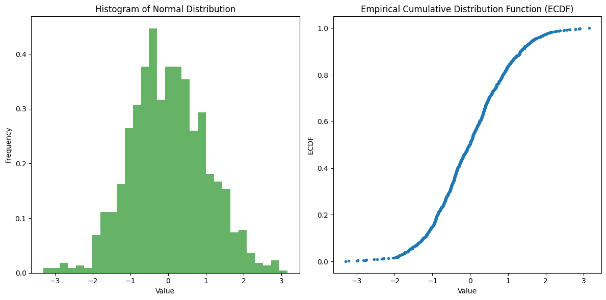
Boxplot:
In a boxplot, the box in the middle of the graph indicates the quartiles and the median.The two horizontal lines represent the largest (or the smallest) observation which falls within a distance of 1.5 times the size of the box. The observations outside this box are considered as “extremes” and are noted by points.
# Parameters for the normal distribution
mean = 0
std_dev = 1
# Generate random numbers
random_numbers = norm.rvs(mean, std_dev, size=1000)
# Create a figure
fig, ax = plt.subplots(figsize=(8, 6))
# Plot Boxplot
ax.boxplot(random_numbers)
ax.set_title('Boxplot of Normal Distribution')
ax.set_xlabel('Value')
# Show the plot
plt.tight_layout()
plt.show()
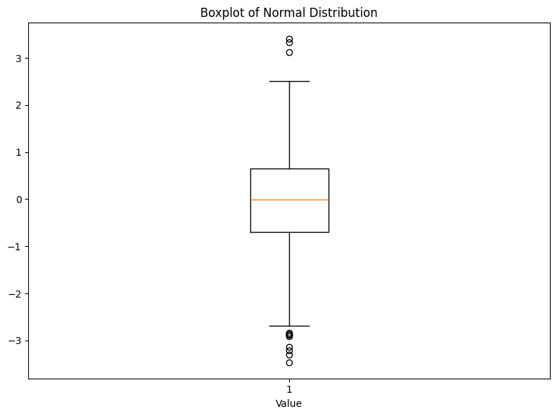
Grouped data#
We are presenting here some techniques for comparing plots between groups.
Consider the following dataset
energy_data = pd.DataFrame({
"expend": [9.21,7.53,7.48,8.08,8.09,10.15,8.40,10.88,6.13,7.90,
11.51,12.79,7.05,11.85,9.97,7.48,8.79,9.69,9.68,7.58,9.19,8.11],
"stature": ["obese","lean","lean","lean","lean","lean","lean","lean","lean","lean",
"obese","obese","lean","obese","obese","lean","obese","obese","obese","lean","obese","lean"]
})
Histograms by group:
expend_lean = energy_data.loc[energy_data.stature=="lean","expend"]
expend_obese = energy_data.loc[energy_data.stature=="obese","expend"]
plt.figure(figsize=(8,4))
plt.subplot(1,2,1)
plt.hist(expend_lean, bins=10, color="white", edgecolor='black')
plt.xlim(5,13)
plt.ylim(0,4)
plt.title("Lean")
plt.subplot(1,2,2)
plt.hist(expend_obese, bins=10, color="grey", edgecolor='black')
plt.xlim(5,13)
plt.ylim(0,4)
plt.title("Obese")
plt.tight_layout()
plt.show()
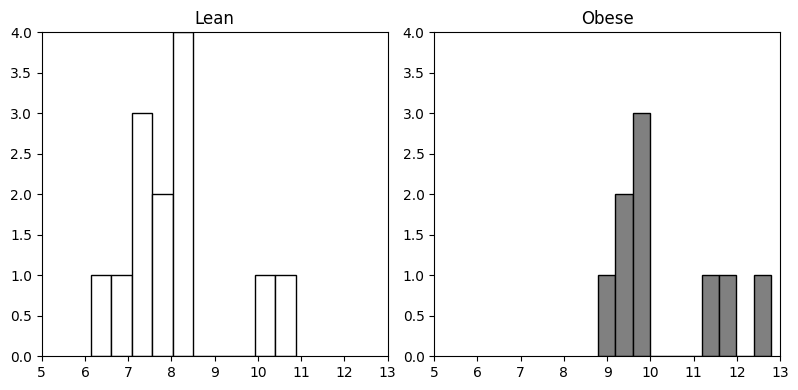
Parallel boxplots:
plt.boxplot([expend_lean, expend_obese], labels=["Lean","Obese"])
plt.title("Expenditure by Stature")
plt.show()
/var/folders/g7/l9_hhr256md6lt7yldvmnjjw0000gn/T/ipykernel_5969/2885235429.py:1: MatplotlibDeprecationWarning: The 'labels' parameter of boxplot() has been renamed 'tick_labels' since Matplotlib 3.9; support for the old name will be dropped in 3.11.
plt.boxplot([expend_lean, expend_obese], labels=["Lean","Obese"])
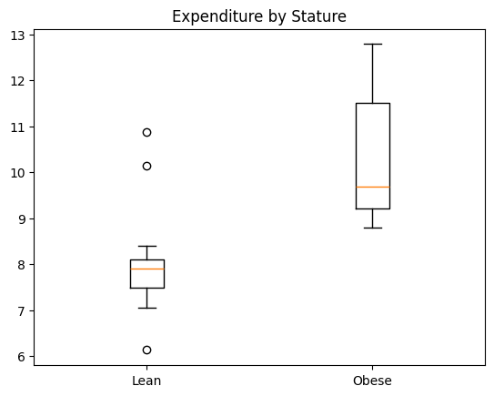
Tables#
A bi-dimensional table can be generated using
np.array. The following example concerns the caffeine consumption while giving birth, with respect to women’s civil status.
caff_marital = np.array([
[652,1537,598,242],
[36,46,38,21],
[218,327,106,67]
])
rows = ["Married","Prev.married","Single"]
cols = ["0","1-150","151-300",">300"]
caff_df = pd.DataFrame(caff_marital, index=rows, columns=cols)
caff_df
| 0 | 1-150 | 151-300 | >300 | |
|---|---|---|---|---|
| Married | 652 | 1537 | 598 | 242 |
| Prev.married | 36 | 46 | 38 | 21 |
| Single | 218 | 327 | 106 | 67 |
Marginal tables:
caff_df.sum(axis=1) # row sums
Married 3029
Prev.married 141
Single 718
dtype: int64
caff_df.sum(axis=0) # column sums
0 906
1-150 1910
151-300 742
>300 330
dtype: int64
Relative frequencies:
caff_df.apply(lambda r: r/r.sum(), axis=1) # row-wise proportions
| 0 | 1-150 | 151-300 | >300 | |
|---|---|---|---|---|
| Married | 0.215253 | 0.507428 | 0.197425 | 0.079894 |
| Prev.married | 0.255319 | 0.326241 | 0.269504 | 0.148936 |
| Single | 0.303621 | 0.455432 | 0.147632 | 0.093315 |
caff_df / caff_df.sum().sum() # overall proportions
| 0 | 1-150 | 151-300 | >300 | |
|---|---|---|---|---|
| Married | 0.167695 | 0.395319 | 0.153807 | 0.062243 |
| Prev.married | 0.009259 | 0.011831 | 0.009774 | 0.005401 |
| Single | 0.056070 | 0.084105 | 0.027263 | 0.017233 |
Graphical display of tables#
Bar plots:
total_caff = caff_df.sum(axis=1)
total_caff.plot.bar(color='black')
plt.show()
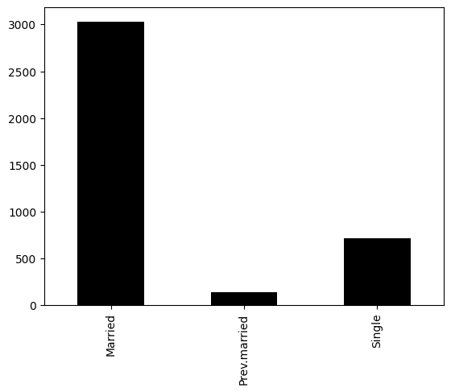
Stacked barplot:
caff_df.plot(kind='bar', stacked=True)
plt.show()
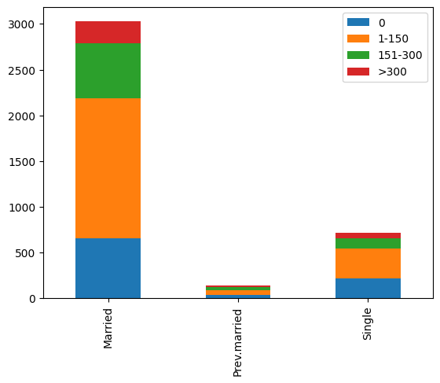
Side-by-side (unstack and plot):
caff_df.T.plot.bar(figsize=(6,4))
plt.show()
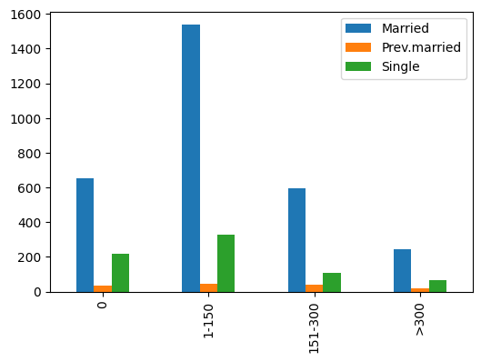
Normalized proportions:
(caff_df.T / caff_df.T.sum()).plot.bar(stacked=True)
plt.show()
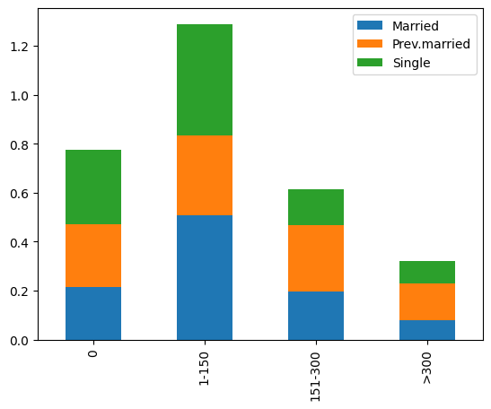
Create a scatterplot with the same information as the previous bar plots
# Flatten and plot as dot chart
vals = caff_df.values.flatten()
labels = [(r,c) for r in rows for c in cols]
ypos = np.arange(len(vals))
plt.scatter(vals, ypos)
plt.yticks(ypos, labels)
plt.title("Scatterplot of caff.marital")
plt.show()
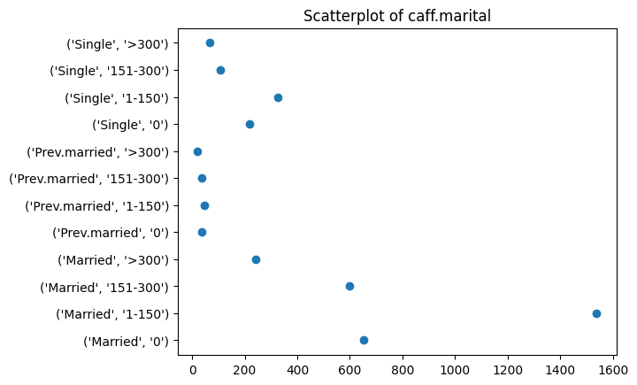
Pie charts:
fig, axes = plt.subplots(1,3, figsize=(8,8))
for i, (ax, row) in enumerate(zip(axes.flat, rows)):
ax.pie(caff_df.loc[row], labels=cols, autopct='%1.1f%%')
ax.set_title(row)
plt.tight_layout()
plt.show()
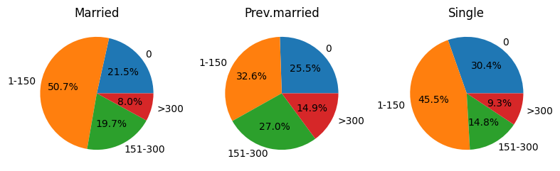
Common Errors#
Mixing data types: In pandas DataFrames, adding rows of different lengths or data types leads to missing values (NaN) or errors.
Missing data: Pandas uses
NaNfor missing data. Operations must handle these values (e.g.df["c"]might not exist;NaNpropagate in computations).
Debugging#
For debugging, Python provides print() statements, assert statements, pdb (Python debugger), or IDE features like breakpoints.
def f(a): return g(a)
def g(b): return h(b)
def h(c): return i(c)
def i(d):
if not isinstance(d, (int,float)):
raise ValueError("`d` must be numeric")
return d + 10
try:
f("a")
except Exception as e:
print("Error:", e)
Error: `d` must be numeric
We get a traceback showing where the error occurred. We can also use import pdb; pdb.set_trace() inside functions to debug step-by-step.
Session info-like commands in Python#
import sys
sys.version
import platform
platform.platform()
import pip
# To list installed packages:
!pip list
Package Version Editable project location
---------------------------------- ----------------- -------------------------------
absl-py 2.1.0
accelerate 0.29.3
accessible-pygments 0.0.5
adagio 0.2.6
aenum 3.1.15
affine 2.4.0
aiofiles 24.1.0
aiohappyeyeballs 2.4.4
aiohttp 3.11.11
aiosignal 1.3.2
alabaster 0.7.16
alembic 1.14.0
animatplot 0.4.3
aniso8601 10.0.1
annotated-types 0.7.0
antlr4-python3-runtime 4.9.3
antropy 0.1.8
anyio 4.11.0
anytree 2.12.1
apispec 6.6.1
apispec-webframeworks 1.1.0
appdirs 1.4.4
appnope 0.1.4
apptools 5.3.0
arcade 2.6.17
arch 7.2.0
argcomplete 3.6.2
argon2-cffi 23.1.0
argon2-cffi-bindings 21.2.0
arrow 1.3.0
asciitree 0.3.3
asgiref 3.8.1
astroid 3.3.11
asttokens 3.0.0
astunparse 1.6.3
async-lru 2.0.4
attrs 24.3.0
audioread 3.0.1
autograd 1.7.0
Automat 25.4.16
autopep8 2.3.1
babel 2.16.0
backports.tarfile 1.2.0
basix 0.0.13
bcrypt 4.2.1
beartype 0.19.0
beautifulsoup4 4.12.3
bidict 0.23.1
bilby 2.4.0
bilby.cython 0.5.3
binaryornot 0.4.4
bitsandbytes 0.42.0
black 24.10.0
bleach 6.2.0
blinker 1.9.0
blis 1.1.0
blosc2 3.0.0
bokeh 3.6.2
boltons 24.1.0
boto3 1.34.113
botocore 1.34.162
Bottleneck 1.4.2
branca 0.8.1
Brotli 1.1.0
build 1.2.2.post1
CacheControl 0.14.2
cached-property 2.0.1
cachetools 4.2.4
calflops 0.3.2
Cartopy 0.24.1
catalogue 2.0.10
catboost 1.2.7
category_encoders 2.7.0
catkin-pkg 1.0.0
certifi 2025.11.12
cffi 1.17.1
cftime 1.6.4.post1
cgen 2020.1
chardet 5.2.0
charset-normalizer 3.4.4
cleo 2.1.0
click 8.3.0
click-plugins 1.1.1
cligj 0.7.2
cloudpathlib 0.20.0
cloudpickle 3.1.0
cmdstanpy 1.2.5
codepy 2023.1
colcon-argcomplete 0.3.3
colcon-bash 0.5.0
colcon-cd 0.1.1
colcon-cmake 0.2.29
colcon-common-extensions 0.3.0
colcon-core 0.19.0
colcon-defaults 0.2.9
colcon-devtools 0.3.0
colcon-library-path 0.2.1
colcon-metadata 0.2.5
colcon-notification 0.3.0
colcon-output 0.2.13
colcon-package-information 0.4.0
colcon-package-selection 0.2.10
colcon-parallel-executor 0.3.0
colcon-pkg-config 0.1.0
colcon-powershell 0.4.0
colcon-python-setup-py 0.2.9
colcon-recursive-crawl 0.2.3
colcon-ros 0.5.0
colcon-test-result 0.3.8
colcon-zsh 0.5.0
colorama 0.4.6
colorcet 3.1.0
colorlog 6.9.0
comm 0.2.2
confection 0.1.5
configmypy 0.2.0
configobj 5.0.9
constantly 23.10.4
contourpy 1.3.1
cookiecutter 2.6.0
coreforecast 0.0.15
corner 2.2.3
cot 2.2.1
coverage 7.8.0
crashtest 0.4.1
crc32c 2.7.1
cryptography 44.0.2
cubist 0.1.4
cycler 0.12.1
cymem 2.0.10
Cython 3.0.11
das4whales 0.1.0
dascore 0.1.5
dash 3.3.0
dash-bootstrap-components 2.0.4
dash-core-components 2.0.0
dash-html-components 2.0.0
dash-table 5.0.0
dask 2024.12.1
dask-expr 1.1.21
databricks-sdk 0.73.0
datasets 3.2.0
DateTime 5.5
dcor 0.6
debugpy 1.8.11
decorator 5.1.1
deepdiff 7.0.1
deepwave 0.0.23
defusedxml 0.7.1
derivative 0.6.3
devito 4.8.6
dill 0.3.8
distlib 0.3.9
distributed 2024.12.1
distro 1.9.0
dm-tree 0.1.8
dnspython 2.8.0
docker 7.1.0
docker-pycreds 0.4.0
docstring_parser 0.16
docutils 0.21.2
donfig 0.8.1.post1
dotmap 1.3.30
dtw-python 1.5.3
dulwich 0.22.7
dynesty 2.1.5
efficientnet-pytorch 0.7.1
eikonalfm 0.9.7
einops 0.8.0
emcee 3.1.6
emd 0.8.0
empy 4.2
entrypoints 0.4
envisage 7.0.3
et_xmlfile 2.0.0
etils 1.12.2
executing 2.1.0
fastai 2.7.18
fastapi 0.115.6
fastcore 1.7.28
fastdownload 0.0.7
fasteners 0.19
fastjsonschema 2.21.1
fastprogress 1.0.3
fenics-basix 0.9.0
filelock 3.16.1
findiff 0.12.1
fiona 1.10.1
FiPy 3.4.5
flake8 7.2.0
flake8-blind-except 0.1.1
flake8-builtins 2.5.0
flake8-class-newline 1.6.0
flake8-comprehensions 3.16.0
flake8-deprecated 2.2.1
flake8-docstrings 1.7.0
flake8-import-order 0.18.2
flake8-quotes 3.4.0
FLAML 2.3.3
Flask 3.1.2
flask-cors 5.0.1
Flask-RESTful 0.3.10
Flask-SocketIO 5.4.1
flatbuffers 24.12.23
flexcache 0.3
flexparser 0.4
fonttools 4.55.3
fqdn 1.5.1
frozenlist 1.5.0
fs 2.4.16
fsspec 2024.9.0
fugue 0.9.1
functime 0.9.5
future 1.0.0
fuzzywuzzy 0.18.0
gast 0.6.0
gdown 5.2.0
geodistpy 0.1.3
geographiclib 2.0
gevent 24.11.1
gevent-websocket 0.10.1
git-filter-repo 2.47.0
gitdb 4.0.12
gitignore_parser 0.1.11
GitPython 3.1.44
glfw 2.9.0
gluonts 0.16.0
google-ai-generativelanguage 0.6.14
google-api-core 2.24.0
google-api-python-client 2.158.0
google-auth 1.35.0
google-auth-httplib2 0.2.0
google-auth-oauthlib 0.5.3
google-generativeai 0.8.3
google-pasta 0.2.0
googleapis-common-protos 1.66.0
graphene 3.4.3
graphql-core 3.2.7
graphql-relay 3.2.0
graphviz 0.20.3
greenlet 3.3.0
grpcio 1.69.0
grpcio-status 1.69.0
gunicorn 23.0.0
h11 0.16.0
h5netcdf 1.4.1
h5py 3.12.1
hdf5plugin 5.0.0
holidays 0.64
holoviews 1.20.0
htmltools 0.6.0
httpcore 1.0.9
httplib2 0.22.0
httptools 0.6.4
httpx 0.28.1
huey 2.5.4
huggingface-hub 0.27.1
hydra-core 1.3.2
hyperlink 21.0.0
idna 3.11
ifaddr 0.2.0
imageio 2.36.1
imageio-ffmpeg 0.5.1
imagesize 1.4.1
imbalanced-learn 0.13.0
imblearn 0.0
immutabledict 4.2.1
importlib_metadata 8.7.0
importlib_resources 6.5.2
Incremental 24.11.0
iniconfig 2.0.0
installer 0.7.0
ipydatawidgets 4.3.5
ipykernel 6.29.5
ipyleaflet 0.19.2
ipympl 0.9.6
ipython 8.31.0
ipython-genutils 0.2.0
ipywidgets 8.1.5
isodate 0.6.1
isoduration 20.11.0
isort 6.0.1
itsdangerous 2.2.0
jaraco.classes 3.4.0
jaraco.context 6.0.1
jaraco.functools 4.1.0
jaxtyping 0.2.36
jedi 0.19.2
Jinja2 3.1.6
jmespath 1.0.1
joblib 1.4.2
json5 0.10.0
jsonargparse 4.35.0
jsonpointer 3.0.0
jsonschema 4.23.0
jsonschema-specifications 2024.10.1
jupyter 1.1.1
jupyter-book 1.0.4.post1
jupyter-cache 1.0.1
jupyter_client 8.6.3
jupyter-console 6.6.3
jupyter-contrib-core 0.4.2
jupyter-contrib-nbextensions 0.7.0
jupyter_core 5.7.2
jupyter-events 0.11.0
jupyter-highlight-selected-word 0.2.0
jupyter-leaflet 0.19.2
jupyter-lsp 2.2.5
jupyter_nbextensions_configurator 0.6.4
jupyter-resource-usage 1.1.0
jupyter_server 2.15.0
jupyter_server_terminals 0.5.3
jupyterlab 4.3.4
jupyterlab_myst 2.4.2
jupyterlab_pygments 0.3.0
jupyterlab_server 2.27.3
jupyterlab_widgets 3.0.13
jupyterthemes 0.20.0
jupytext 1.16.6
k-Wave-python 0.4.0
kagglehub 0.3.10
keras 3.8.0
keras-core 0.1.7
keras-self-attention 0.51.0
keyring 25.6.0
kiwisolver 1.4.8
kornia 0.8.0
kornia_rs 0.1.8
kotsu 0.3.3
kthread 0.2.3
langcodes 3.5.0
language_data 1.3.0
lark 1.1.1
Lasagne 0.1
latexcodec 3.0.0
lazy_loader 0.4
lesscpy 0.15.1
libclang 18.1.1
librosa 0.10.2.post1
lightgbm 4.6.0
lightly 1.5.16
lightly-utils 0.0.2
lightning 2.5.0.post0
lightning-utilities 0.11.9
linkify-it-py 2.0.3
llvmlite 0.43.0
locket 1.0.0
loguru 0.7.3
lxml 5.4.0
lz4 4.3.3
Mako 1.3.8
marisa-trie 1.2.1
Markdown 3.6
markdown-it-py 3.0.0
markdown2 2.5.2
MarkupSafe 3.0.3
marshmallow 3.21.2
matplotlib 3.10.0
matplotlib-inline 0.1.7
mccabe 0.7.0
mdit-py-plugins 0.5.0
mdurl 0.1.2
memory-profiler 0.61.0
memray 1.15.0
meshio 5.3.5
meteostat 1.6.8
mistune 3.1.0
ml-dtypes 0.4.1
mlflow 3.6.0
mlflow-skinny 3.6.0
mlflow-tracing 3.6.0
mlx 0.22.0
mne 1.9.0
mock 5.2.0
more-itertools 10.5.0
mpi-pytest 2025.7
mpi4py 4.0.1
mpmath 1.3.0
mrmr-selection 0.2.8
msgpack 1.1.0
mujoco 3.3.1
mujoco-tests 0.1.0
multidict 6.1.0
multiprocess 0.70.16
munch 4.0.0
murmurhash 1.0.11
mutagen 1.47.0
mypy 0.931
mypy-extensions 1.0.0
myst 1.0.4
myst-nb 1.2.0
myst-parser 3.0.1
namex 0.0.8
narwhals 2.11.0
nbclassic 1.1.0
nbclient 0.10.2
nbconvert 7.16.5
nbformat 5.10.4
nbimporter 0.3.4
ndindex 1.9.2
nest-asyncio 1.6.0
netCDF4 1.7.2
netgen-mesher 6.2.2506
netgen_occt 7.8.1
netifaces 0.11.0
networkx 3.3
neuraloperator 2.0.0
ngsolve 6.2.2506
ngspy 0.1.0
nh3 0.2.20
nicegui 2.9.1
nodeenv 1.10.0
nose 1.3.7
notebook 7.3.2
notebook_shim 0.2.4
npTDMS 1.9.0
npy-append-array 0.9.16
numba 0.60.0
numcodecs 0.14.1
numexpr 2.10.2
numpy 2.3.4
numpyarray_to_latex 0.1.0
numpydoc 1.8.0
oauthlib 3.3.1
obspy 1.4.1
omegaconf 2.3.0
opencv-python 4.10.0.84
openpyxl 3.1.2
opentelemetry-api 1.38.0
opentelemetry-proto 1.38.0
opentelemetry-sdk 1.38.0
opentelemetry-semantic-conventions 0.59b0
opt_einsum 3.4.0
optree 0.13.1
optuna 4.1.0
ordered-set 4.1.0
orderly-set 5.5.0
orjson 3.10.14
ortools 9.11.4210
overrides 7.7.0
packaging 24.2
pandas 2.3.3
pandas-stubs 2.2.3.241126
pandocfilters 1.5.1
panel 1.5.5
param 2.2.0
paramiko 3.5.0
parso 0.8.4
partd 1.4.2
passlib 1.7.4
path 17.1.0
path.py 12.5.0
pathspec 0.12.1
patsy 1.0.1
PCSE 6.0.9
pdoc 15.0.1
pep8 1.7.1
petsc 3.24.1
pexpect 4.9.0
pgmpy 0.1.26
phiflow 2.4.0
phiml 1.11.0
pillow 11.1.0
Pint 0.24.4
pip 26.0
pip-review 1.3.0
pkginfo 1.12.0
platformdirs 4.3.6
plotly 6.4.0
plotly-cloud 0.1.0rc5
pluggy 1.5.0
ply 3.11
pmdarima 2.0.4
poetry 2.0.1
poetry-core 2.0.1
poetry-plugin-export 1.9.0
polars 0.20.31
pooch 1.8.2
pprintpp 0.4.0
preshed 3.0.9
pretrainedmodels 0.7.4
prometheus_client 0.21.1
prompt_toolkit 3.0.48
propcache 0.2.1
proto-plus 1.25.0
protobuf 5.29.5
prov 2.0.1
pscript 0.7.7
psutil 7.0.0
ptyprocess 0.7.0
pure_eval 0.2.3
py-cpuinfo 9.0.0
py-pde 0.42.1
pyaml 25.1.0
pyarrow 16.1.0
pyarrow-hotfix 0.6
pyasdf 0.8.1
pyasn1 0.6.1
pyasn1_modules 0.4.1
PyAudio 0.2.14
pyawd 0.3.85
pybtex 0.24.0
pybtex-docutils 1.0.3
pycatch22 0.4.5
pychord 1.2.2
pycodestyle 2.13.0
pycparser 2.22
pycryptodomex 3.21.0
pyct 0.5.0
pydantic 2.10.5
pydantic_core 2.27.2
pydata-sphinx-theme 0.15.4
pydocstyle 6.3.0
pydot 1.4.2
pyexodus 0.1.5
pyface 8.0.0
pyflakes 3.3.2
pygame 2.6.1
pyglet 2.1.0
Pygments 2.19.2
pygraphviz 1.14
pykalman 0.9.7
PyLaTeX 1.4.2
pylint 3.3.8
pymongo 4.7.2
pymunk 6.10.0
PyNaCl 1.5.0
PyOpenGL 3.1.9
pyparsing 2.4.7
pyproj 3.7.0
pyproject_hooks 1.2.0
PyQt5 5.15.11
PyQt5-Qt5 5.15.16
PyQt5_sip 12.16.1
PyQt6 6.8.0
PyQt6-Qt6 6.8.1
PyQt6_sip 13.9.1
pyreadr 0.5.2
pyrfr 0.9.0
pyserial 3.5
pyshp 2.3.1
PySocks 1.7.1
pytest 8.3.4
pytest_codeblocks 0.17.0
pytest-cov 6.1.1
pytest-mock 3.14.0
pytest-repeat 0.9.4
pytest-rerunfailures 15.0
python-dateutil 2.9.0.post0
python-dotenv 1.0.1
python-engineio 4.11.2
python-forge 18.6.0
python-json-logger 3.2.1
python-multipart 0.0.20
python-qt 0.50
python-slugify 8.0.4
python-socketio 5.12.1
pythreejs 2.4.2
pytiled_parser 2.2.7
pytools 2025.1.1
pytorch-accelerated 0.1.49
pytorch-lightning 2.5.0.post0
pytorch-wavelets 1.3.0
pyts 0.13.0
pytz 2025.2
pyvista 0.44.2
pyviz_comms 3.0.3
pyvmomi 8.0.3.0.1
PyWavelets 1.8.0
PyYAML 6.0.2
pyzmq 26.2.0
qtconsole 5.6.1
QtPy 2.4.2
questionary 2.1.0
RapidFuzz 3.11.0
rasterio 1.4.3
rdflib 6.3.2
readme_renderer 44.0
referencing 0.35.1
regex 2024.11.6
requests 2.32.5
requests-oauthlib 2.0.0
requests-toolbelt 1.0.0
retrying 1.4.2
rfc3339-validator 0.1.4
rfc3986 2.0.0
rfc3986-validator 0.1.1
rich 14.2.0
rich-argparse 1.7.2
roman-numerals-py 3.1.0
rosdep 0.25.1
rosdistro 1.0.1
rospkg 1.6.0
rpds-py 0.22.3
rsa 4.9
Rtree 1.3.0
ruamel.yaml 0.18.10
ruamel.yaml.clib 0.2.12
ruff 0.9.1
s3transfer 0.10.4
safetensors 0.5.2
schedule 1.2.2
scikit-base 0.9.0
scikit-fdiff 0.7.0
scikit-fem 11.0.0
scikit-image 0.25.0
scikit-learn 1.8.0
scikit-neuralnetwork 0.7
scikit-optimize 0.10.2
scikit-posthocs 0.11.2
scipy 1.16.3
scooby 0.10.0
scribd-downloader 0.1.3
seaborn 0.13.2
seasonal 0.3.1
segmentation_models_pytorch 0.4.0
segyio 1.9.12
seisbench 0.8.2
Send2Trash 1.8.3
sentry-sdk 2.19.2
setproctitle 1.3.4
setuptools 80.9.0
shap 0.47.0
shapely 2.0.6
shellingham 1.5.4
shiny 1.5.0
shinychat 0.2.8
simple-websocket 1.0.0
simpy 4.1.1
simwave 0.0.0 /Users/pascaltribel/PhD/simwave
six 1.17.0
skforecast 0.14.0
skimpy 0.0.15
sklearn-compat 0.1.3
skorch 1.1.0
skpro 2.8.0
sktime 0.35.0
slicer 0.0.8
smart-open 7.1.0
smmap 5.0.2
sniffio 1.3.1
snowballstemmer 2.2.0
snuggs 1.4.7
sortedcontainers 2.4.0
soundfile 0.13.0
soupsieve 2.6
soxr 0.5.0.post1
spacy 3.8.3
spacy-legacy 3.0.12
spacy-loggers 1.0.5
sparse 0.15.4
specfem_tomo_helper 0.2.0
specfempp 0.1.0
specfempp-core 0.3.0
Sphinx 7.4.7
sphinx-book-theme 1.1.4
sphinx-comments 0.0.3
sphinx-copybutton 0.5.2
sphinx_design 0.6.1
sphinx_external_toc 1.0.1
sphinx-jupyterbook-latex 1.0.0
sphinx-multitoc-numbering 0.1.3
sphinx-proof 0.2.1
sphinx-thebe 0.3.1
sphinx-togglebutton 0.3.2
sphinx_wagtail_theme 6.5.0
sphinxawesome-theme 5.3.2
sphinxcontrib-applehelp 2.0.0
sphinxcontrib-bibtex 2.6.3
sphinxcontrib-devhelp 2.0.0
sphinxcontrib-htmlhelp 2.1.0
sphinxcontrib-jsmath 1.0.1
sphinxcontrib-qthelp 2.0.0
sphinxcontrib-serializinghtml 2.0.0
spyro 0.9.1
SQLAlchemy 2.0.30
sqlparse 0.5.4
srsly 2.5.0
sshuttle 1.1.2
stack-data 0.6.3
stanio 0.5.1
starlette 0.41.3
statsforecast 2.0.0
statsmodels 0.14.6
stldecompose 0.0.5
stochastic 0.6.0
streamz 0.6.4
stumpy 1.13.0
supersmoother 0.4
symengine 0.13.0
sympy 1.14.0
tables 3.10.2
tabulate 0.9.0
taipy 4.1.0
taipy-common 4.1.0
taipy-core 4.1.0
taipy-gui 4.1.0
taipy-rest 4.1.0
taipy-templates 4.1.0
tbats 1.1.3
tblib 3.0.0
temporian 0.0.0
tenacity 6.3.1
tensorboard 2.18.0
tensorboard-data-server 0.7.2
tensorboardX 2.6.2.2
tensorflow 2.18.0
tensorflow-io-gcs-filesystem 0.37.1
tensorflow-macos 2.15.1
tensorflow-metal 1.1.0
tensorly 0.9.0
tensorly-torch 0.5.0
termcolor 2.5.0
terminado 0.18.1
text-unidecode 1.3
textual 1.0.0
Theano 1.0.5
thinc 8.3.3
thonny 4.1.7
threadpoolctl 3.5.0
tifffile 2025.1.10
timm 1.0.13
tinycss2 1.4.0
tokenizers 0.21.0
toml 0.10.2
tomli 2.3.0
tomli_w 1.2.0
tomlkit 0.13.2
toolz 0.12.1
torch 2.9.1
torch_harmonics 0.7.3
torch-stft 0.1.4
torchaudio 2.4.1
torchaudio-filters 0.2.1
torchdiffeq 0.2.5
torchgeo 0.6.2
torchinfo 1.8.0
torchmetrics 1.6.1
torchode 1.0.0
torchsummary 1.5.1
torchtyping 0.1.5
torchview 0.2.6
torchvision 0.23.0
tornado 6.4.2
tqdm 4.66.6
traitlets 5.14.3
traitlets_pcse 5.0.0.dev0
traits 6.4.3
traitsui 8.0.0
traittypes 0.2.1
trame 3.7.6
trame-client 3.5.1
trame-server 3.3.0
transformers 4.48.0
triad 0.9.8
trove-classifiers 2025.1.10.15
tsbootstrap 0.1.2
tsfeatures 0.4.5
tsfel 0.1.9
tsflex 0.4.1
tsfresh 0.21.0
tslearn 0.6.3
twine 6.0.1
Twisted 24.7.0
typeguard 2.13.3
typer 0.15.1
types-python-dateutil 2.9.0.20241206
types-pytz 2024.2.0.20241221
typeshed_client 2.7.0
typing_extensions 4.15.0
tzdata 2025.2
tzlocal 5.2
uc-micro-py 1.0.3
ujson 5.10.0
uri-template 1.3.0
uritemplate 4.1.1
urllib3 1.26.20
utilsforecast 0.2.10
uv 0.5.18
uvicorn 0.34.0
uvloop 0.21.0
vbuild 0.8.2
vcstool 0.3.0
verboselogs 1.7
virtualenv 20.28.1
voluptuous 0.15.2
vtk 9.3.1
wandb 0.19.2
wasabi 1.1.3
watchdog 4.0.1
watchfiles 1.0.4
wcwidth 0.2.13
weasel 0.4.1
webcolors 24.11.1
webencodings 0.5.1
webgui_jupyter_widgets 0.2.37
websocket-client 1.8.0
websockets 14.1
Werkzeug 3.1.3
wget 3.2
wheel 0.45.1
widgetsnbextension 4.0.13
wrapt 1.17.1
wslink 2.2.2
wsproto 1.2.0
xarray 2025.1.1
xattr 1.1.4
xdas 0.2.1
xgboost 2.1.3
xinterp 0.1.2
xxhash 3.5.0
xyzservices 2024.9.0
yarl 1.18.3
youtube-dl 2021.12.17
yt-dlp 2025.1.12
zarr 3.0.0
zencfg 0.6.0
zict 3.0.0
zipp 3.23.0
zope.event 6.1
zope.interface 7.2